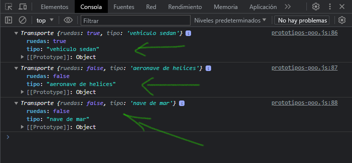

Un lenguaje basado en prototipos?
JavaScript es a menudo descrito como un lenguaje basado en prototipos para proporcionar mecanismos de herencia, los objetos pueden tener un objeto prototipo, el cual actúa como un objeto plantilla que hereda métodos y propiedades.
Un objeto prototipo del objeto puede tener a su vez otro objeto prototipo, el cual hereda métodos y propiedades, y asi sucesivamente. Esto es conocido con frecuencia como la cadena de prototipos, y explica por que objetos diferentes pueden tener disponibles propiedades y métodos definidos en otros objetos.
En JavaScript, se establece un enlace entre la instancia del objeto y su prototipo, y las propiedades y métodos son encontrados recorriendo la cadena de prototipos.
Veamos un ejemplo donde creamos una función constructora:
function Persona(nombre, apellido, edad) {
this.nombre = nombre
this.apellido = apellido
this.edad = edad
this.show = function () {
console.log(`Hola ${this.nombre} ${this.apellido} con edad de ${this.edad}`)
}
}
Hemos creado una función constructora llamada Persona() que recibe 3 parámetros llamados "nombre", "apellido" y "edad". Nótese que hacemos uso de la palabra reservada this haciendo referencia al contexto en donde nos encontramos. Seguido hemos definido una función que nos muestra por consola los datos que le hemos pasado como parámetros.
Ahora, partiendo de esta función constructora podemos crear instancias de un objeto como este, veamos como podemos hacerlo:
const persona1 = new Persona("Ulises", "Flores", 24)
const persona2 = new Persona("Erlinda", "de Flores", 23)
Para poder hacer instancia de un objeto hacemos uso de la palabra reservada new seguido del nombre de la función constructora pasando valores a los parámetros. En este ejemplo hemos creado dos instancias llamadas "persona1" y "persona2".
Una vez hecho la instancia de nuestro objeto, podemos acceder por medio de la instancia a sus propiedades y métodos, veamos como:
// accediendo a métodos
persona1.show()
persona2.show()
// accediendo a propiedades
console.log(`Acceso a propiedad de ${persona1.nombre}`)
console.log(`Acceso a propiedad de ${persona2.nombre}`)
Accedemos al método llamado show() de ambas instancias, y también accedemos a propiedades de ambas instancias, la propiedad a la que accedemos en este ejemplo es a "nombre". Teniendo como resultado lo siguiente:
Analizando
Ya sabemos como crear una función constructora y como esta tiene un objeto prototipo, el cual hereda métodos y propiedades al hacer instancia de ella. Veremos otro ejemplo:
function Transporte(ruedas, tipo) {
this.ruedas = ruedas
this.tipo = tipo
this.terrestre = function () {
if (ruedas) {
console.log(`Tiene ruedas`)
} else {
console.log(`NO tiene ruedas`)
}
console.log(`Medio de transporte terrestre`)
}
this.aereo = function () {
if (ruedas) {
console.log(`Tiene ruedas`)
} else {
console.log(`NO tiene ruedas`)
}
console.log(`Medio de transporte aéreo`)
}
this.acuatico = function () {
if (ruedas) {
console.log(`Tiene ruedas`)
} else {
console.log(`NO tiene ruedas`)
}
console.log(`Medio de transporte acuático`)
}
}
Hemos creado una función constructora llamada "Transporte" que recibe dos parámetros, dentro de ellas tenemos métodos y propiedades. Los métodos creados hacen referencia al tipo de transporte que creemos al crear instancia de la función constructora.
const auto = new Transporte(true, "vehiculo sedan")
const helicoptero = new Transporte(false, "aeronave de helices")
const barco = new Transporte(false, "nave de mar")
Hemos creado 3 instancias para cada medio de transporte auto, helicoptero y barco. Mostremos en consola cada instancia y veamos que nos muestra por cada instancia:
console.log(auto)
console.log(helicoptero)
console.log(barco)
Por cada instancia podemos ver que tenemos sus dos propiedades "ruedas" y "tipo" y sus 3 métodos llamados terrestre(), aereo() y acuatico().
Ahora bien, analizando cada instancia, los métodos han sido creados para cada instancia según el tipo de transporte que sea, es decir, si el tipo de transporte es un auto se hará uso del método llamado terrestre(), si el tipo de transporte es un helicóptero se hará uso del método llamado aereo() y si el tipo de transporte es un barco se hará uso del método llamado acuatico(). Entonces lo que buscamos es que por cada instancia no se incluyan los métodos que no van de acuerdo al tipo de transporte, esto quiere decir que al declarar métodos dentro de nuestra función constructora, cada vez que hagamos instancia de ella siempre se incluirán y duplicaríamos métodos que no se utilizarían y esto afectara al rendimiento de nuestra aplicación web.
Pero, como podemos mejorar esto con buenas practicas? Para los métodos debemos crearlos fuera de la función constructora colgados de su prototipo, y no crearlos dentro de la función constructora, es decir, en la función constructora solo dejar las propiedades que usaríamos.
Nuestra función constructora nos quedaría de la siguiente manera:
function Transporte(ruedas, tipo) {
this.ruedas = ruedas
this.tipo = tipo
}
Al mostrar por consola cada instancia podemos observar que ya no aparecen los métodos que habíamos creado:
Pero, y como podemos crear los métodos? Los métodos debemos crearlos colgando de su prototipo, es decir, nosotros creamos una función constructora y a partir de esta creamos instancias, entonces se establece un enlace entre la instancia del objeto y su propiedad __proto__ sobre el constructor.
Veamos una imagen para poder entender un poco mas:
En la imagen, donde nos indica una flecha con color azul y subrayado en amarillo, esa es la propiedad __proto__ sobre el constructor. Y lo que esta subrayado con color verde, ese es el constructor, osea de nuestra función constructora con el nombre que le declaramos.
Ahora ya podemos entender cuando tratamos de decir que crearemos los métodos colgando de su prototipo y para eso utilizamos la notación del punto y la palabra reservada prototype quedando un poco asi funcionConstructora.prototype.nombreMetodo = function () { ... }.
Definiendo los métodos colgando de su prototipo:
Transporte.prototype.terrestre = function () {
if (this.ruedas) {
console.log(`Tiene ruedas`)
} else {
console.log(`NO tiene ruedas`)
}
console.log(`Medio de transporte terrestre`)
}
Transporte.prototype.aereo = function () {
if (this.ruedas) {
console.log(`Tiene ruedas`)
} else {
console.log(`NO tiene ruedas`)
}
console.log(`Medio de transporte aéreo`)
}
Transporte.prototype.acuatico = function () {
if (this.ruedas) {
console.log(`Tiene ruedas`)
} else {
console.log(`NO tiene ruedas`)
}
console.log(`Medio de transporte acuático`)
}
Asi definimos los métodos al prototipo sobre el constructor. Asi evitamos que a cada instancia se repitan los métodos y asi poder usar el método que solamente vamos a invocar mejorando el rendimiento de la aplicación web y realizando buenas practicas.
Solo nos queda volver hacer instancia e invocar el método que corresponda a cada una de ellas.
const auto = new Transporte(true, "vehiculo sedan")
const helicoptero = new Transporte(false, "aeronave de helices")
const barco = new Transporte(false, "nave de mar")
auto.terrestre()
helicoptero.aereo()
barco.acuatico()